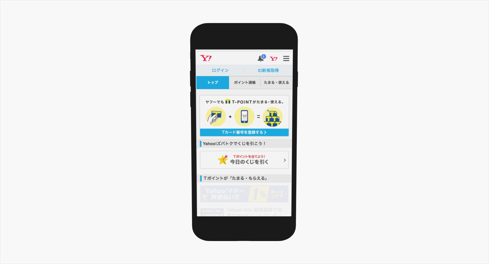
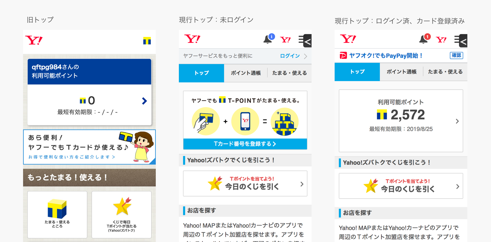

Proposition：一覧に戻る
ポイントサイトリニューアル
2015
https://points.yahoo.co.jp/


*画像をクリックすると拡大できます
概要
本件はヤフーのIDを持つユーザーは手持ちのＴポイントカードを登録するとポイント数が確認が行えるサービスで，スマートフォン（以降はSPと表記）向けにページは最適化されておらずPCで表示している内容をそのまま表示するにとどまっていた．そこで，掲載要素の整理とSP向けページのデザインリニューアルを実施しスマホ向けのコンテンツを整備を行った．
担当：ビジュアルデザイン
使用ツール：Photoshop/ Illustrator
期間：2015年07月 – 2015年09月
メンバー：3人
URL：https://points.yahoo.co.jp/
作業内容
サービスページビジュアル設計
サービスページのリニューアルでのゴールは，「SP経由の登録を増やす」ことがメインであった．しかし，SPページはポイントを意識的に貯めるユーザーにも，登録を行おうというユーザーのどちらにもアプローチがかけられていなかった．サービス登録を行うメリットである「カードを登録するとポイントを貯めるられる」という点をどう表現するかを検討し，いくつかの案の中から，「カードをSPページに登録するとポイントが積み上がる」ことを表現した内容を採用した．こちらは現在も使用されている．
デザイン作業を行うにあたって，ページ全体の構成の検討，Photoshopを用いたMVやバナーの作成を行った．今回の作業によってコンテンツの無駄の排除と訴求内容の整理を行うに至った．
TOP